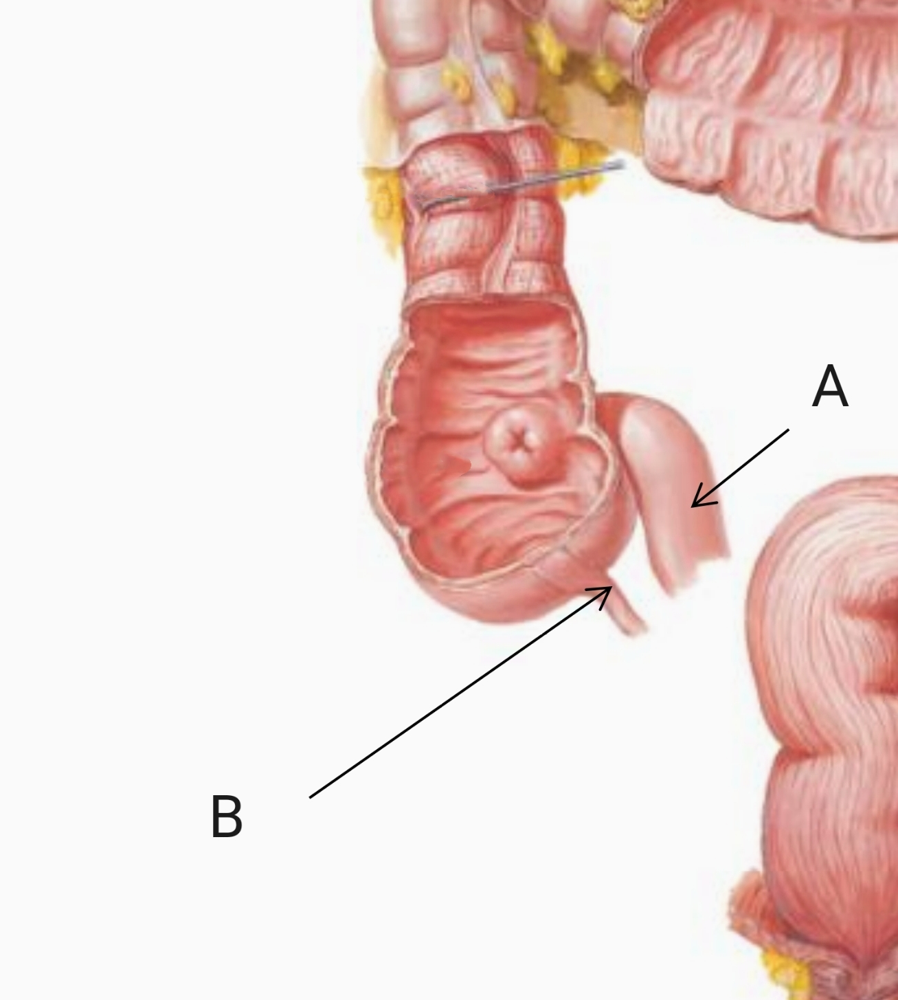
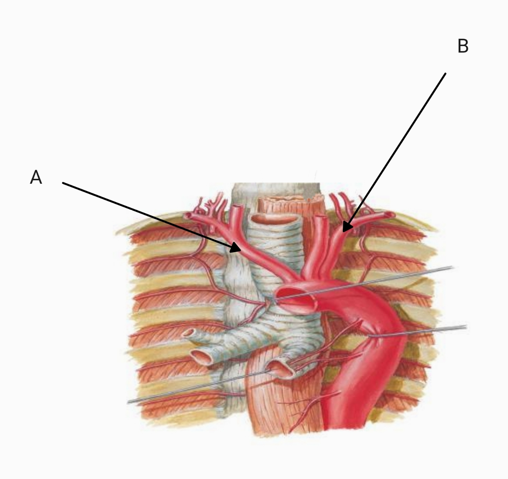
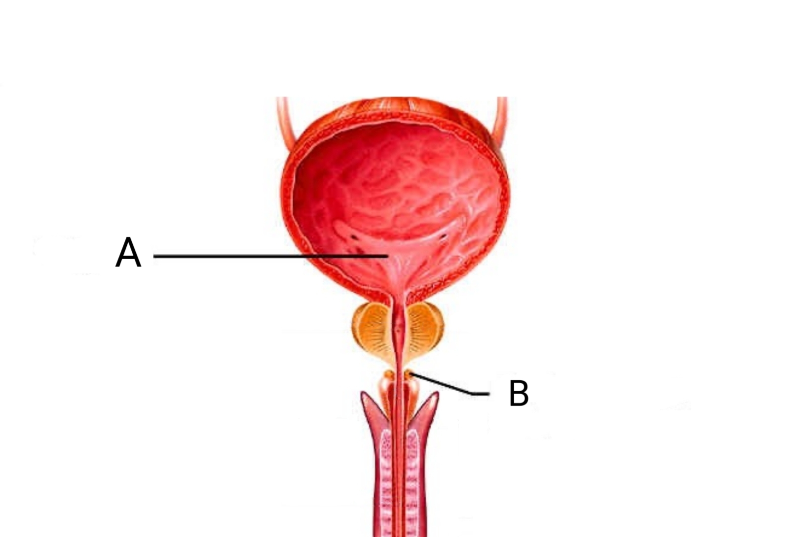
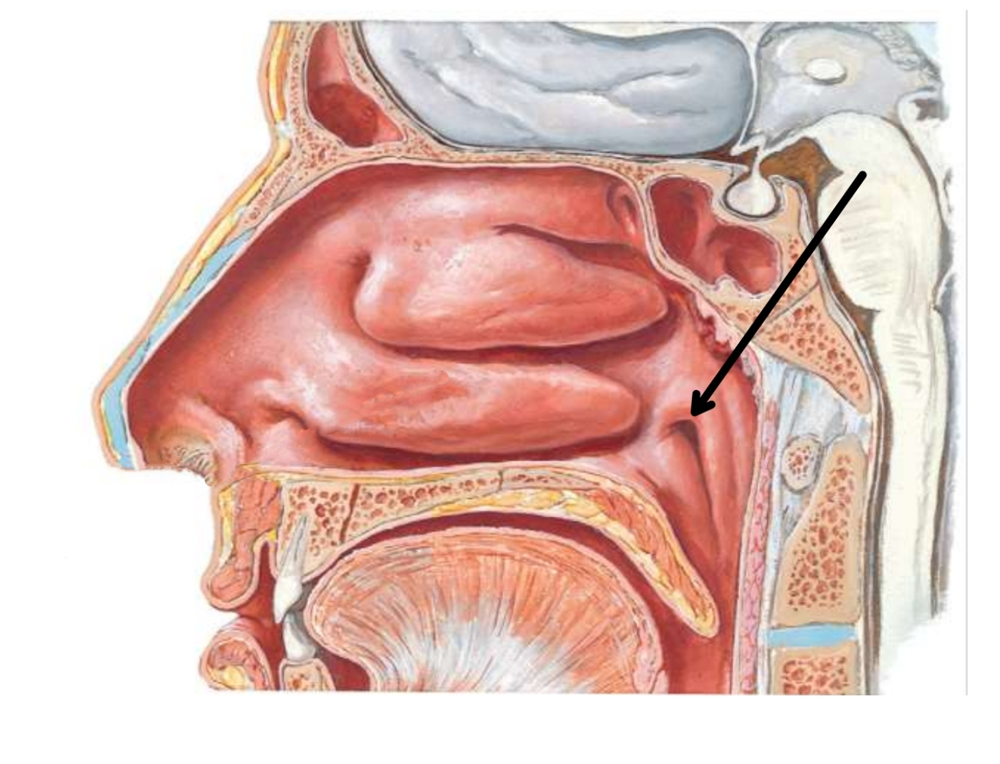
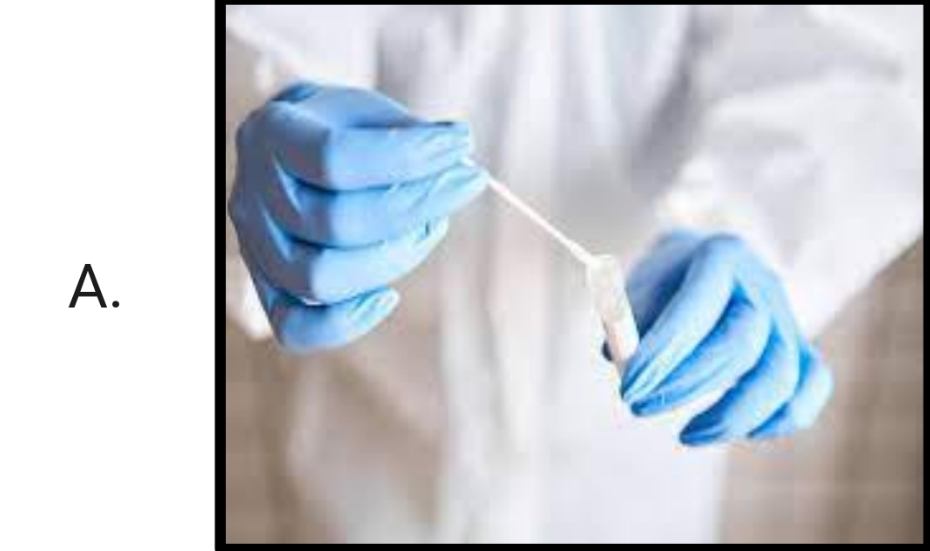
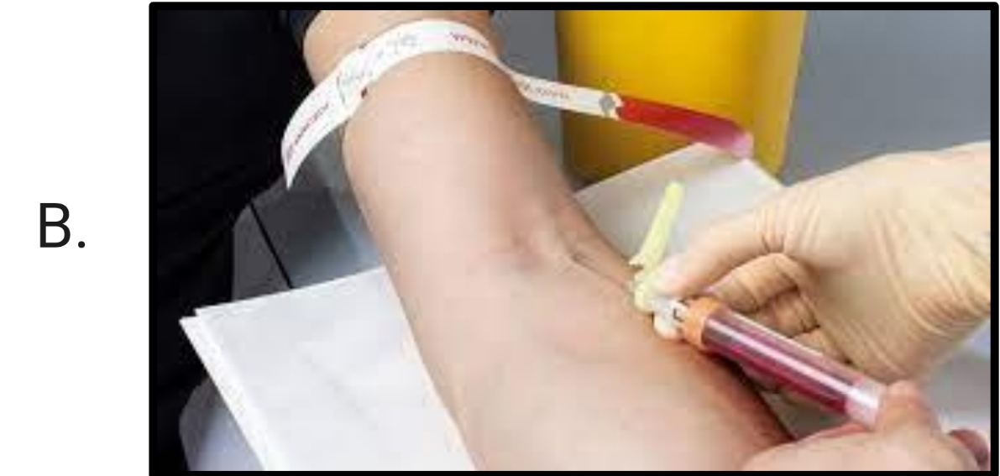
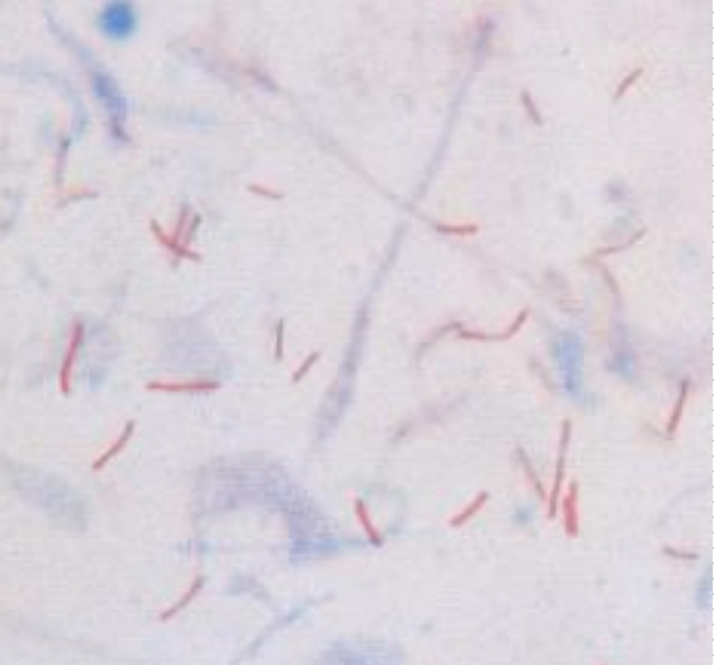
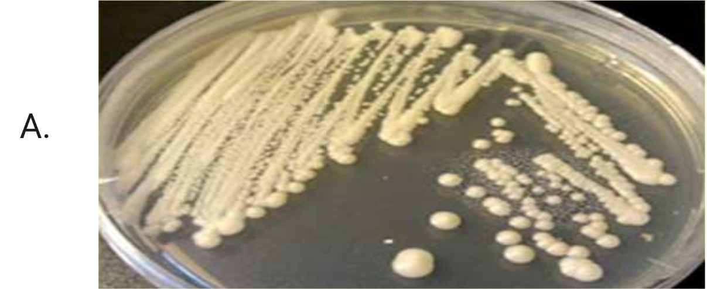
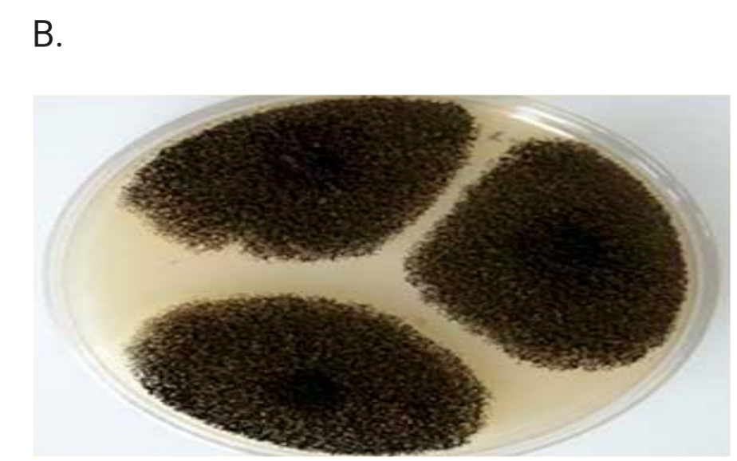

End-Rotation
HDSF • Theory Exam • 2025-2026
ANATOMY 🦴 6 questions
1.
A. Name the structure A.
B. Name the structure B.

2.
A. What is the pointed area?
B. What is its vertebral level?

3.
A. Name the structure A.
B. Name the structure B.

4.
A. Name the structure A.
B. Name the structure B.

5.
A. Name the structure A.
B. Name the structure B.

6.
A. Name the pointed area.
B. Location.

MICROBIOLOGY LABS 🧫 4 questions
7.
A. What is this called?
B. What is used for?
8.
A. Type of sample A?
B. Type of sample B?


9. Which of the following is acid-fast bacteria?
- Staphylococcus aureus
- Mycobacterium tuberculosis
- Streptococcus pneumoniae
- Neisseria gonorrhoeae
- Escherichia coli

10.
A. Identify the media.
B. What type of organism?

